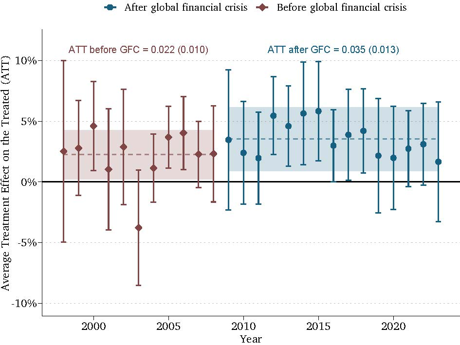
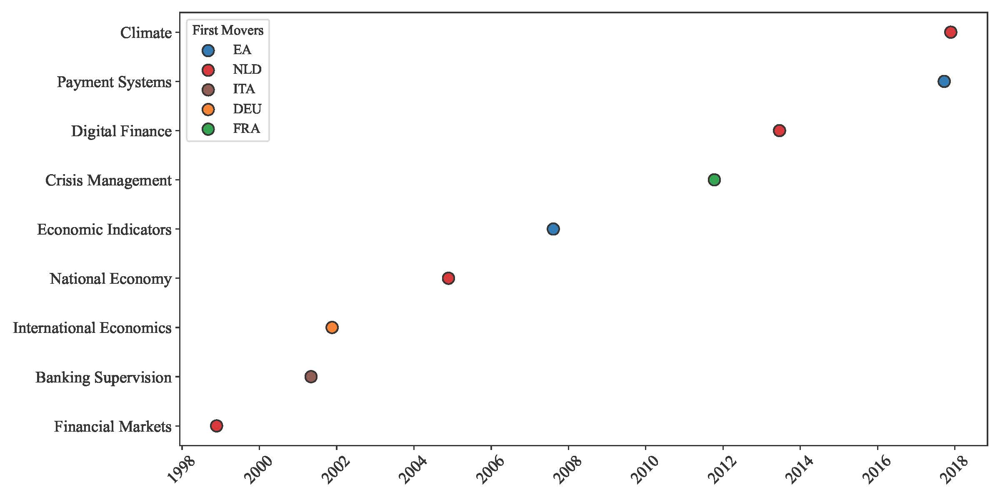
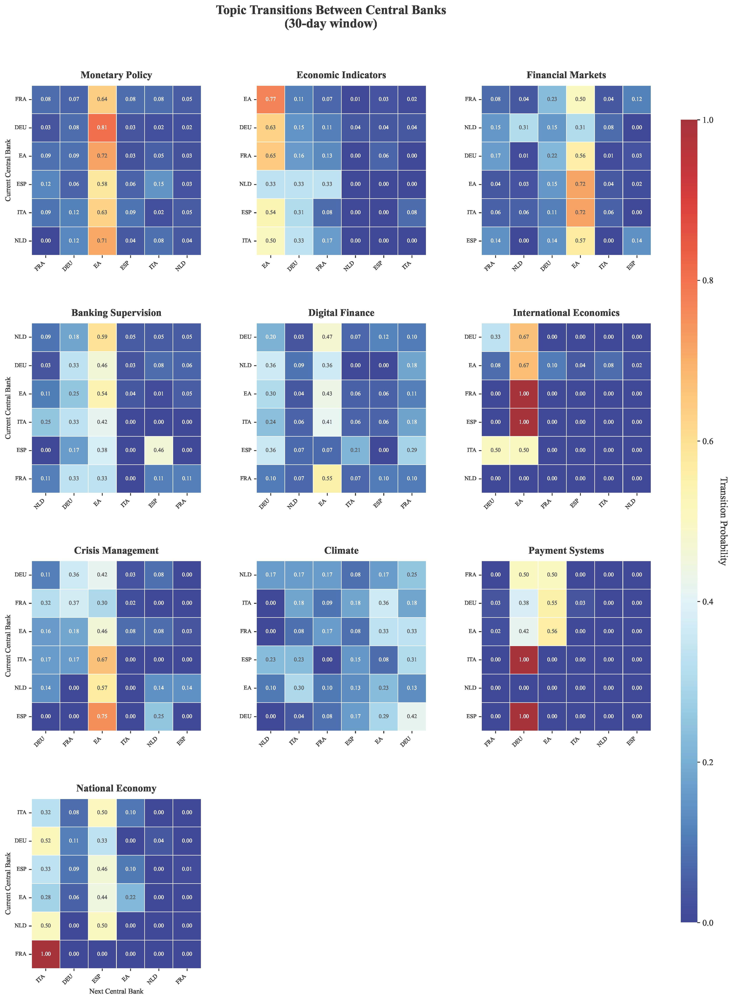
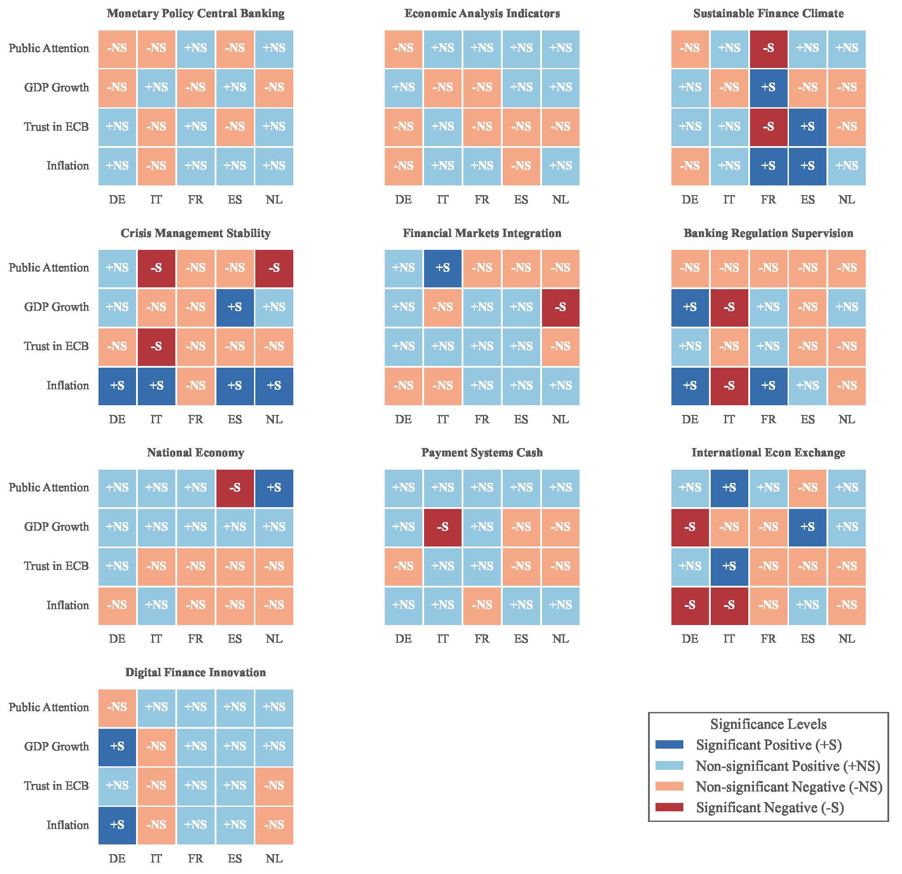

The Rise of Central Bank Talk:
Essays in Central Bank Communication and Independence
Thesis Defense →
Lauren Leek
August 5, 2025
Thesis Committee
Prof. Simon Hix – European University Institute (supervisor)
Prof. Waltraud Schelkle – European University Institute (co-supervisor)
Prof. Kenneth Benoit – Singapore Management University
Prof. Ana Carolina Garriga – University of Essex
Central Banks in the Headlines
Puzzle
How do central banks reconcile their independent status with extensive public communication that goes beyond their narrow mandates?
Chapter 2*
How Central Bank Independence Shapes Monetary Policy Communication:
A Large Language Model Application
Does the way in which central banks communicate about monetary policy change with increases in independence?
Theory
- Delegation Dilemma: Gov'ts delegate to ICBs for credibility, but this creates a democratic deficit.
- Communication as Legitimacy: ICBs use communication to bridge this gap, demonstrating accountability and managing expectations.
- Hypothesis: As independence ↑, communication shifts from narrow, technical justifications (price stability) to broader topics (financial stability) to build public legitimacy.
Methods
- Google Gemini sentence classification (monetary vs. financial pressures).
- Staggered DiD on 100 CBs (1997‑2023) + IV.
Findings
Findings
Chapter 3*
Who Sets the Agenda? The Role of National
Central Banks in the Eurosystem
What drives the expansion of the ECB agenda and continued engagement with a variety of topics?
Theory
- Agenda-Setting & Policy Entrepreneurship: Actors (here, NCBs) can introduce new ideas into the policy debate.
- Bureaucratic Politics: Policy is an outcome of competition among organizations (NCBs vs ECB).
- Hypothesis: NCBs, closer to national concerns, act as policy entrepreneurs, introducing topics (e.g., climate) which the ECB later adopts to maintain relevance and control.
Methods
- BERTopic on 4 659 speeches (1997‑2024).
- First‑mover graphs & Markov chains.
Findings
- NCBs lead on climate & supervision; ECB follows.
- Coalition of NCBs ↑ probability topic diffuses to ECB.
Findings: NCBs first movers
Findings: ECB direct responsive
Findings: NCBs lead 3 month lags

Findings: ECB not extra responsive under pressure
Chapter 4
Introducing Textual Measures of Central Bank Policy Linkages Using GPT-3.5
How good are LLMs at detecting shifts toward dominance or coordination across policy domains?
Theory
- Policy Dominance: One policy area (e.g., fiscal) can constrain another (monetary), threatening independence.
- Coordination vs. Dominance: A spectrum, not a binary choice. Central banks can coordinate with governments or be dominated by them.
- Hypothesis: LLMs can be trained to detect subtle linguistic cues in communication that signal shifts along the coordination-dominance spectrum.
Methods
- GPT‑3.5 multi‑stage prompting → 2 M sentences → 6 regimes.
- Validation vs. human gold set.
Guess the Regime
Loading example…
Findings
- ↑ Coordination talk ↑; ↓ dominance talk.
- Shift stronger in crises; robust to controls.
Findings


Chapter 5
Conclusion – More Than Talk?
How does communication safeguard legitimacy of autonomous central banks?
Methods
Synthesis of empirical chapters + current‑affairs triangulation.
Findings
- Talk is an adaptive shield, not window‑dressing.
- Transparency used strategically against evolving threats.
Current Affairs (2025)
- Fed vs. Treasury on digital dollar.
- ECB embeds climate risk into collateral.
- BoE independence politically reviewed.
Appendix
- Replication: GitHub
- Dashboards: centralbanktalk.eu